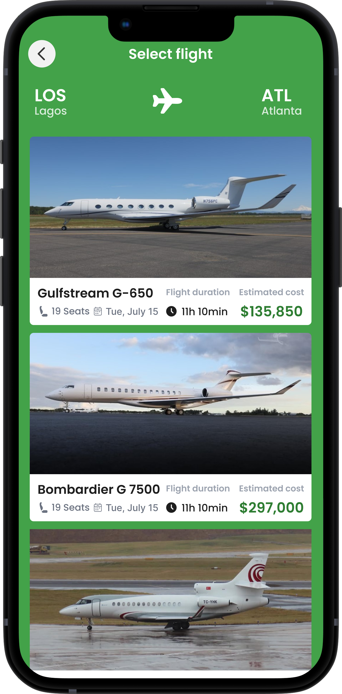
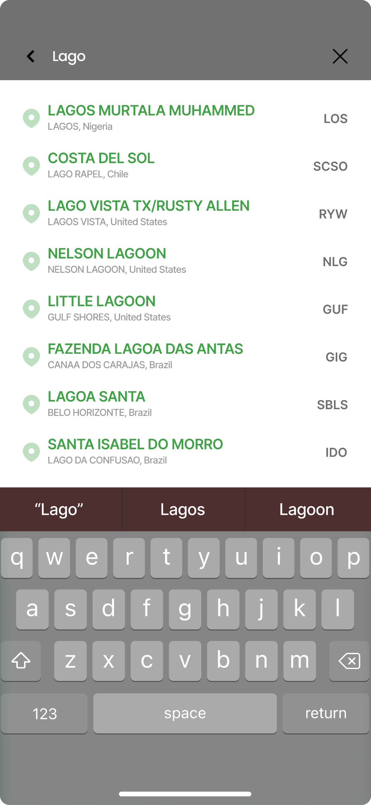
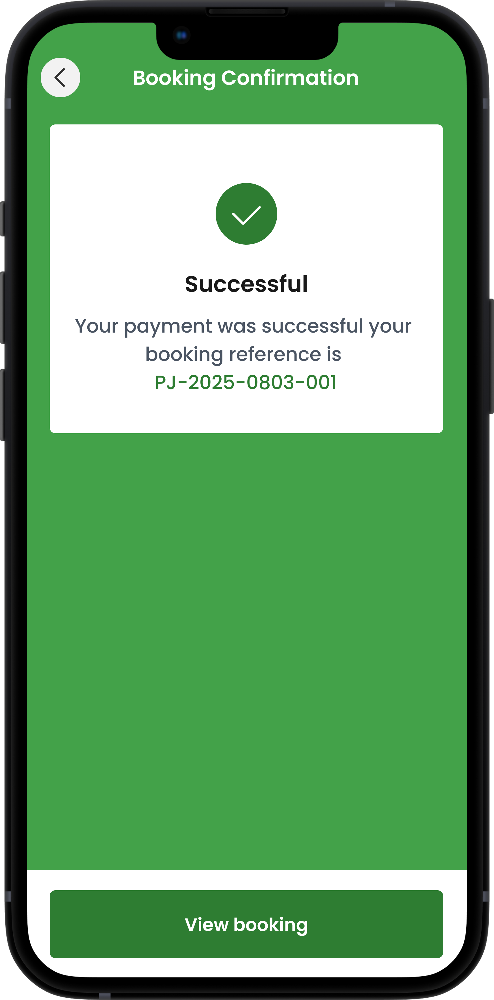
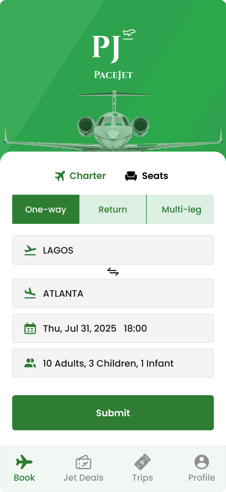
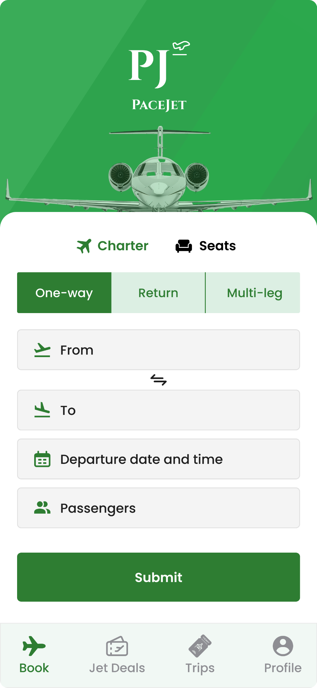
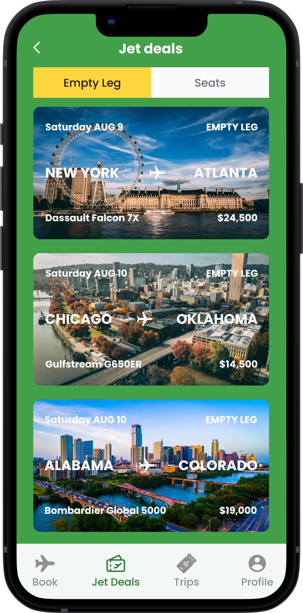
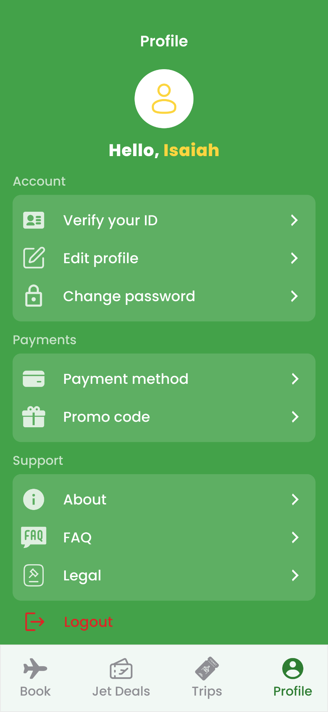
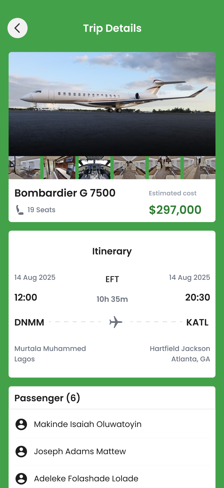
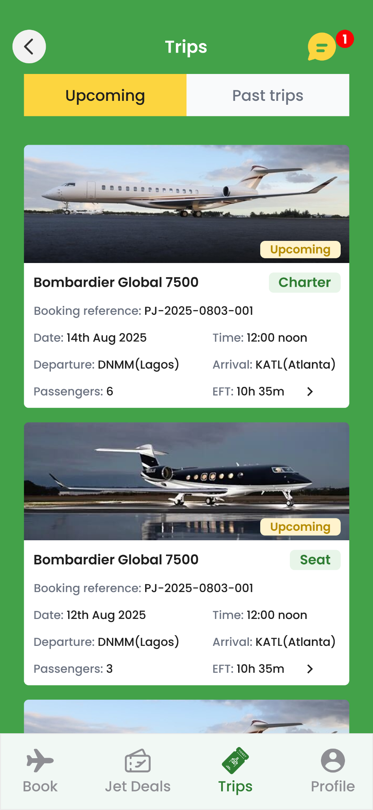

The user begins with flight search and enters the information needed to explore a journey.
CASE STUDY / PRIVATE AVIATION · MOBILE PRODUCT DESIGN
Pacejet.
A private aviation booking experience covering flight search, aircraft discovery, booking review and trip management.
01 / PROJECT OVERVIEW
A product built around a complete user journey.
Pacejet is a mobile product design project focused on the private jet booking journey. The work explores how a user can search for a flight, compare aircraft options, review a proposed trip, complete a booking flow and manage trip information afterwards.
Primary audience: People exploring or arranging private aviation travel who need to search for flights, review aircraft options, understand trip details and keep track of bookings.
02 / THE PROBLEM
The need behind the experience.
Private aviation booking can involve multiple decisions before a trip is confirmed: route and airport selection, aircraft choice, flight details and booking review. The product challenge is to organize these steps into a mobile journey that feels clear and considered, while giving users a place to return to trip information.
03 / PROJECT OBJECTIVES
What the experience is designed to achieve.
- Create a clear starting point for searching private flights.
- Help users move from route and airport selection to aircraft discovery.
- Present flight information in a structured review step.
- Provide a clear booking confirmation state.
- Give users a dedicated area to review trips and profile information.
- Connect discovery and trip-management experiences within one app.
04 / HOW IT WORKS
A walkthrough of the main user journey.
Airport search supports the process of identifying departure and arrival locations.
The aircraft selection experience lets the user browse options as part of the booking journey.
A flight review screen brings important journey information together before booking is submitted.
The booking confirmation screen represents the confirmation stage of the journey.
Trips and trip-details screens provide a place to review journey information after booking.
The jet deals screen adds a discovery area for available deals and empty-leg opportunities.
05 / CORE FEATURES
Capabilities explained in context.
Flight search
A dedicated entry point for beginning a private flight search.
Charter search
A charter-focused search experience within the broader booking journey.
Airport selection
An airport search interface to support route setup.
Aircraft discovery
An aircraft browsing experience that helps users move toward a suitable option.
Flight review
A structured review screen for checking journey details before confirming.
Booking confirmation
A clear confirmation state in the designed booking flow.
Jet deals
A discovery surface for jet deals and empty-leg opportunities.
Trips and trip details
A post-booking area for reviewing trip summaries and individual trip information.
Profile
A personal account area within the mobile product.
06 / DESIGN APPROACH
Designing for clarity and continuity.
I designed the experience as a sequence of connected decisions. Search and airport selection establish the journey; aircraft discovery supports the choice; flight review provides a checkpoint before confirmation; and trips create continuity after booking. The intention is to make a complex, high-consideration service understandable on a mobile screen. The broader project contains more than 150 designed screens; the 10 selected screens here illustrate key parts of that experience.
07 / IMPLEMENTATION
From interface design to product build.
This is a mobile product design and prototyping project. The case study presents the supplied UI screens and interaction concept; it does not claim a production mobile implementation.
PROTOTYPE WALKTHROUGH
See the experience in motion.
This dedicated 16:9 space is reserved for the interactive prototype walkthrough. When your video is ready, replace this placeholder with an embedded video or prototype recording.
PROTOTYPE VIDEOVideo embed placeholder · Add video URL here
The screens, in context.
All 10 original supplied project images are included. Select any screen to view it at full size.










09 / CHALLENGES
The decisions behind the work.
The main design challenge is sequencing a high-consideration booking journey without overwhelming the user. Route details, aircraft information and trip summaries serve different purposes, so the interface needs to present each at the right stage and give users a clear way to move forward or review information.
10 / KEY LEARNINGS
What I took away from the project.
Pacejet helped me develop a stronger understanding of end-to-end mobile product journeys. It highlighted the importance of designing beyond the primary booking action and accounting for discovery, confirmation and the user's ongoing relationship with a trip.
150+ mobile screens designed.